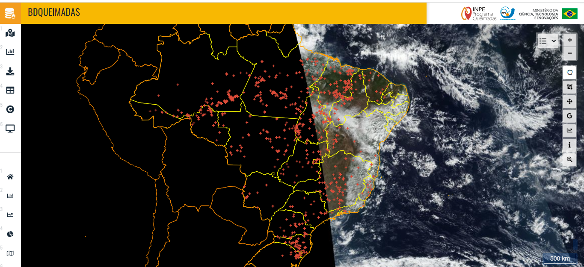

A Inteligência Artificial (IA) emerge como uma importante aliada na análise de dados para a avaliação de áreas ambientalmente frágeis no município de Teresópolis, no Rio de Janeiro. Em um cenário onde a preservação ambiental é crucial, a aplicação de tecnologias avançadas pode fornecer insights valiosos para a tomada de decisões sustentáveis.
A obtenção e análise de informações ambientais frequentemente representam obstáculos complexos, devido à amplitude territorial e à variedade dos ecossistemas. Nesse cenário, a IA se sobressai ao examinar grandes quantidades de dados com agilidade e exatidão, revelando padrões e relações que escapariam à investigação tradicional. Algoritmos de aprendizado automático (Machine Learning) podem ser configurados para detectar sinais ambientais específicos, como supressão vegetal, degradação do solo, condições hídricas e mudanças climáticas. Essa aptidão para avaliações automatizadas viabiliza uma vigilância constante e em tempo real, oferecendo uma perspectiva abrangente sobre a situação ecológica do município.
Por meio de imagens orbitais, vindas de satélites, dispositivos de medição e registros históricos como sensores, a IA é capaz de cartografar zonas críticas e apontar possíveis ameaças ambientais. Essa metodologia antecipatória favorece a elaboração de planos de proteção e ações direcionadas para mitigar danos. Ademais, a Inteligência Artificial não apenas otimiza o processamento de dados, como também auxilia na antecipação de cenários futuros. Modelos de previsão baseados em IA podem simular diferentes panoramas ambientais, contribuindo para o desenvolvimento de políticas preventivas e adaptativas.
A crescente instabilidade climática exige soluções rápidas, precisas e escaláveis. A Inteligência Artificial (IA) tem se consolidado como uma ferramenta essencial na gestão de áreas ambientalmente frágeis, substituindo métodos tradicionais que dependem exclusivamente da intervenção humana. Com algoritmos avançados e capacidade de processamento massivo, a IA permite uma análise contínua e detalhada de variáveis ambientais, como temperatura, umidade, qualidade da água, cobertura vegetal e padrões de precipitação.
Diferente da atuação humana, que demanda tempo, recursos e está sujeita a limitações físicas e operacionais, os sistemas de IA operam 24 horas por dia, integrando dados de satélites, sensores remotos e bancos históricos para gerar diagnósticos e previsões em tempo real. Essa abordagem automatizada não apenas acelera o processo de tomada de decisão, como também reduz significativamente os custos e os riscos associados à exposição direta em áreas vulneráveis.
Além disso, a IA oferece uma visão mais abrangente e integrada do território, cruzando informações de diversas fontes para identificar padrões ocultos, antecipar desastres naturais e propor estratégias de mitigação com base em cenários simulados. Essa capacidade preditiva é fundamental para governos, empresas e comunidades que buscam se adaptar às mudanças climáticas e proteger seus ecossistemas. A coleta de dados também pode ser enriquecida por meio de abordagens participativas das comunidades que sofrem em áreas de risco, Como Exemplo relatório de cidadãos que vivem em áreas que costuma ter uma alta frequência de alagamento, deslizamento. Entre outros problemas que podem ter ocorrido por causas naturais ou por conta da ação humana.
Ao substituir tarefas repetitivas e perigosas por inteligência computacional, a IA libera profissionais para funções estratégicas e fortalece a capacidade de resposta diante de eventos extremos. Mais do que uma inovação tecnológica, trata-se de uma mudança de paradigma na forma como cuidamos do meio ambiente e planejamos o futuro.
A implantação de sensores ambientais em locais estratégicos permite a coleta contínua de dados em tempo real. Sensores de qualidade do ar, monitoramento de água e sensores meteorológicos podem fornecer informações decisivas para avaliar a saúde dos ecossistemas e detectar eventos ambientais adversos
As tragédias recentes, como as enchentes no Rio Grande do Sul, evidenciam a necessidade de medidas cada vez mais eficazes para enfrentar os impactos das mudanças climáticas. A urgência por soluções inteligentes e preventivas levou municípios como Caxias do Sul a adotarem tecnologias avançadas para mapear áreas de risco e desenvolver planos de contingência. A emissão de gases de efeito estufa também passou a ser monitorada com o apoio de sistemas digitais, ampliando a capacidade de resposta das autoridades locais.
Nesse contexto, a Inteligência Artificial (IA) desponta como uma ferramenta estratégica para substituir processos manuais e ampliar a eficiência da gestão ambiental. Diferente da atuação humana, que exige tempo, deslocamento e recursos, a IA opera de forma contínua, analisando dados em tempo real e gerando previsões com alto grau de precisão. Com algoritmos capazes de processar imagens de satélite, sensores ambientais e bancos de dados históricos, é possível antecipar eventos extremos, identificar padrões de risco e propor soluções antes que os danos se concretizem.
O Ministério do Meio Ambiente reconheceu essa necessidade ao lançar o programa Cidades Modelo Verdes e Resilientes, que apoia 50 municípios brasileiros na implementação de ações voltadas à redução de emissões e à adaptação climática. Cidades como Serra, no Espírito Santo, já iniciaram protocolos baseados em tecnologia, com foco na sustentabilidade e na proteção da população.
A substituição da mão de obra humana por sistemas inteligentes não significa exclusão, mas sim uma reconfiguração estratégica: profissionais passam a atuar em funções analíticas e decisórias, enquanto a IA assume tarefas repetitivas e de monitoramento contínuo. Essa integração entre tecnologia e gestão pública representa um avanço necessário para enfrentar os desafios ambientais com agilidade, segurança e responsabilidade.